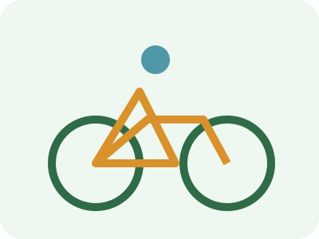

Fenntartható életmód
Tudatos vásárlás és étkezés
- Bevásárlólista és menüterv.
- Saját táska, kulacs és doboz használata.
- A maradékok felhasználása és megfelelő tárolás.
- Tartós, javítható vagy használt termékek választása.
Közlekedés
Rövidebb utaknál, amikor lehetséges, a gyaloglás és a kerékpár, hosszabb utaknál a tömegközlekedés csökkentheti az autóhasználatot.

Források
European Commission – Food Waste
European Environment Agency – Transport and mobility